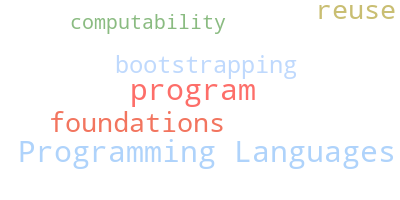

Oscar Bender-Stone
Hello! I am an incoming graduate student at the University of Iowa advised by Garrett Morris. Previously, I was an undergraduate at the University of Colorado at Boulder; I worked in the CUPLV Lab and the Math department.
I study Programming Languages. Specifically, I’m working on program reuse and bootstrapping. I like to incorporate theoretical ideas, especially from mathematical logic and computability theory.
Email: obenderstone@uiowa.edu.
Interests
